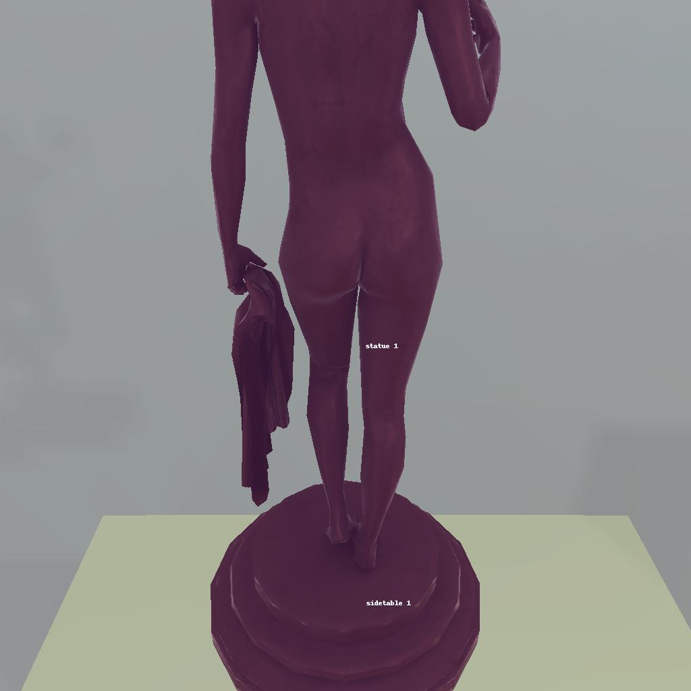

---------------------------------------------------------task: 4---------------------------------------------------------
--------------------------------------------------------------------------------------------------------------------------------------------------------------------
--------------------------------------------------------------------------------------------------------------------------------------------------------------------
Step:--------------------------------------------------------------------------10-------------------------------------------------------------------------------
----------------------------------------
VLM Prompt:
Image1:
Image2:
Image3:
**Instruction**
1. Analyze the provided image to identify all visible household objects, focusing on those relevant to the task description "look at statue under the floorlamp."
2. Use the analysis of the image and the task hint "The agent must find an object of the desired type, locate and turn on a light source with the desired object in-hand." to answer the question: what is the most reasonable action in the choices for the task description "look at statue under the floorlamp"?
4. Decide and write the answer using the template: The answer is: (i): , where i is the real number. If there is no desired object in the image, search every place based on **Initial Observation** to find the object. And if no one is exactly correct, choose a similar answer.
**Initial Observation**
You are in the middle of a room. Looking quickly around you, you can see armchair (1), coffeetable (1-2), sidetable (1), garbagecan (1), drawer (1), sofa (1), diningtable (1)
**Answer Choices**
(1): go to armchair 1
(2): go to coffeetable 1
(3): go to garbagecan 1
(4): go to drawer 1
(5): go to sofa 1
(6): go to coffeetable 2
(7): go to diningtable 1
(8): put statue 1 in/on sidetable 1
**Answer**
Let's think step by step by following the instructions.
----------------------------------------
----------------------------------------
Original Response:
First, analyzing the image, the only visible household object is "sidetable 1" with "statue 1" on top of it. There are no other household items or a floorlamp visible in the image.
Based on the task description "look at statue under the floorlamp" and the hint provided, the most reasonable action would be to locate a floorlamp, turn it on, and then place the statue under it to look at it. However, since the image does not show a floorlamp, we must rely on the initial observation to decide the next action.
From the initial observation, none of the listed locations mentions a floorlamp. Therefore, the most reasonable action from the choices provided would be to interact with the statue since it is the primary object of interest in the task description.
The answer is: (8): put statue 1 in/on sidetable 1. This action involves interacting with the statue, which is the focal point of the task, even though it does not directly accomplish the goal of looking at the statue under the floorlamp. It is the closest action related to the task description with the information given.
----------------------------------------
----------------------------------------
>>> Refine Original VLM Response and Get Pure Action: put statue 1 in/on sidetable 1
----------------------------------------
-----------------------------------------------------------------
Running time: 22.16044330596924 seconds
Total Money: 2.1239699999999995
-----------------------------------------------------------------
-----------------------------------------------------------------
Text Observation:You put the statue 1 in/on the sidetable 1.
-----------------------------------------------------------------
UNSUCCEED